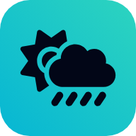

Pick a location to see the forecast
Search for a city above, or use your current position.
Flight Conditions
Based on median values of the selected models · hover or tap a bar for details
Search for a city above, or use your current position.
Based on median values of the selected models · hover or tap a bar for details

Add to your home screen for quick access to the forecast